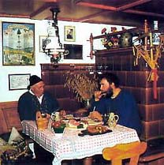
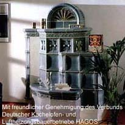
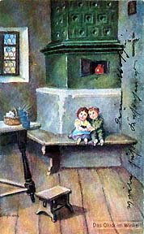
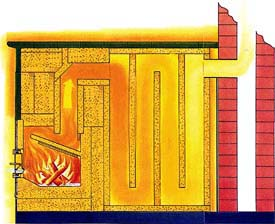
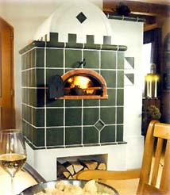

| A History
of Traditional Tile Stoves
600 Years of 'Kachelofen' tradition
Forward
The following text describes the history of the popular central
European tile stove or 'Kachelofen', a type of energy-efficient
stove found in Austro-Hungary, Germany, Switzerland, Bohemia, Northern
Italy and Scandinavia. Tile stoves are less known in Anglo-saxon
countries such as the US or Britain, where cast iron stoves became
popular in the Victorian age. However, masonry and tile stoves did
gain some popularity in the US in the 1970s. The Masonry Heater
Association of North America has a homepage at http://mha-net.org/.
A History of Traditional Tile Stoves
Apart
from open fireplaces, the tile stove is probably the oldest type
of heater. It is certainly the heater with the longest tradition.
The precursor of today’s tile stoves was probably the pilework
stove of the Bronze Age, around 2,500 BC. This early prototype,
which developed in the German and Austrian Alps, consisted of a
fireplace, which was built up with stone and loam. Even then, the
stones took on the role of retaining the heat.
The further development of the tile stove also took place in the
Alps. Fired clay pots were pressed into the stove’s main building
material of soft loam, in order to increase the heat-radiating surface.
The
actual tile stove, whose shell is made up solely of tiles, wasn’t
viable before potters developed square tiles with a ridge from the
pots they were previously using. This development can be traced
back to the 14th century. Since then, the tile stove’s exterior
has followed the styles of the various periods, from Gothic, Renaissance,
Baroque, Rococo, Classicism, Biedermeier (a German-Austrian Folk
style) and Art Nouveau through to the present day. The tile stove’s
heyday was in the 16th and 17th centuries.
Probably
be the oldest existing tile stove, built in a style still being
practiced today, is to be found in the Electoral Prince’s
residence in Meran (South Tyrol, northern Italy). It was built in
the 15th century. Art historians are of the opinion that the Romans
were probably involved in the development of the tile stove. At
least the term "caccabus" seems to imply this. A caccabus
was a hollow cylinder with an opening on one side. They were lined
up in rows and thus formed domes for kilns and other types of ovens.
It’s probable that the German word “Kachel”, meaning
stove tile, is derived from the word "caccabus".
The development of the tile stove progressed logically from pressing
individual tiles into the soft loam to the tile shell. People soon
realized that the tiles, made by the stove-fitter/potter, offered
a suitable surface for artistic decoration. Not only princes, but
also peasants now had their tile stoves custom built.
These
days, stylistic periods can be traced back via the many preserved
tile stoves of past centuries.
Apart from the surface embellishments the tile stove was also developed
technically in those periods. Thus tile stoves may be considered
traditional, but modern at the same time - traditional because they
are built mainly according to tried and tested methods, and modern,
because they utilize most sources of energy and heating techniques
available to us today.
Today,
a tile stove could utilize wood, coal, gas or electrical hot water
and may even have a separate baking compartment attached, according
to individual tastes and ideas.
Article couresty of HAGOS, The German Society of
Tile Stove Makers:
http://www.hagos.de/.
More Articles
|